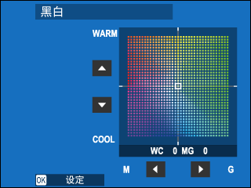
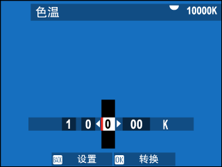
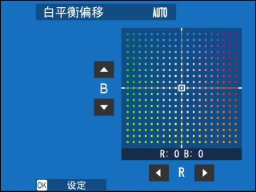
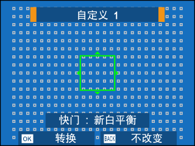
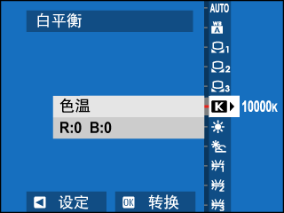
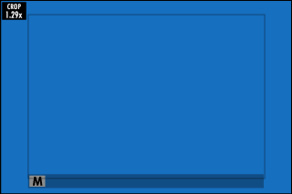
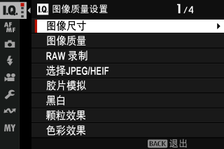
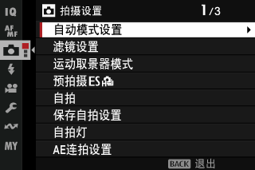

Ⅰ 本课目标Objectives
- 01定好图像尺寸、图像质量与 RAW 录制策略（含无损压缩的取舍）
- 02说出 19 种胶片模拟的取向，并为风光 / 人像各选出主用与备选
- 03掌握白平衡的自动三兄弟、自定义测量与色温 K 值微调
- 04分清动态范围与 D 范围优先级，会用色调曲线压高光提阴影
- 05配好「拍摄设置」里的防抖、快门类型、间隔定时、自拍与预拍摄
- 06把风光与人像两套完整配方存进 C1 / C2
- X-S20
- 一支镜头
- 白纸或灰卡（自定义白平衡用）
Ⅱ 图像尺寸、质量与 RAWSize & Quality
路径：拍摄菜单 > 图像质量设置。先把这个菜单的 24 项列出来，你才知道自己要管的东西有多少。
图像质量设置菜单全项（24 项）
图像尺寸 · 图像质量 · RAW 录制 · 选择 JPEG/HEIF · 胶片模拟 · 黑白 · 颗粒效果 · 色彩效果 · 彩色 FX 蓝色 · 白平衡 · 动态范围 · D 范围优先级 · 色调曲线 · 色彩 · 锐度 · 高 ISO 降噪 · 清晰度 · 长时间曝光降噪 · 镜头调整优化器 · 色彩空间 · 像素映射 · 编辑/保存自定义设置 · 自动更新自定义设置 · 自定义模式设定 · 转接环设置
| 图像尺寸 | 3:2 | 1:1 | 16:9 |
|---|---|---|---|
| L | 6240 × 4160 | 4160 × 4160 | 6240 × 3512 |
| M | 4416 × 2944 | 2944 × 2944 | 4416 × 2488 |
| S | 3120 × 2080 | 2080 × 2080 | 3120 × 1760 |
运动取景器模式或 1.25× 裁切时，只有 M 尺寸可用（4992×3328 等）。图像尺寸关机或换模式都不会重设，注意别在不知情时一直用 S 拍风光。
| 图像质量 | 产出 | 建议 |
|---|---|---|
| FINE | 低压缩率高质量 JPEG/HEIF | 直出就交片时用 |
| NORMAL | 高压缩率、张数更多 | 记录性拍摄 |
| FINE+RAW | RAW + 高质量副本 | 风光标准配置：直出可用 + 后期有余量 |
| NORMAL+RAW | RAW + 标准副本 | 容量紧张时 |
| RAW | 仅 RAW | 完全后期流程 |
附 RAW 录制：三种压缩
| 选项 | 体积 | 质量 | 兼容性 |
|---|---|---|---|
| 未压缩 | 最大 | 原始 | 最广 |
| 无损压缩 | 约 30%–90% | 与未压缩相同 | 需 Capture One / SILKYPIX / X RAW STUDIO 等支持 |
| 压缩（有损） | 约 25%–35% | 大致相同 | 最广 |
结论：用无损压缩。体积省一半以上、画质不掉，代价只是需要较新的软件。
附 JPEG 还是 HEIF
HEIF 压缩效率高、体积小，但查看与分享的选项有限：选 HEIF 会强制关闭「清晰度」并把色彩空间锁为 sRGB；滤镜、全景、多重曝光、HDR 拍摄时也会自动回退到 JPEG。文件扩展名是 .HIF，在电脑上查看前要改成 .HEIC（用 USB 上传到电脑时相机会自动处理）。除非你有明确的 HEIF 工作流，否则用 JPEG。
一个立刻能用的快捷键
把 RAW 指派给一个功能按钮：按一次在「当前质量」与「+RAW」之间切换，再按一次还原。这样平时只拍 JPEG，遇到好光线一按就多存一份 RAW，不用进菜单。
Ⅲ 胶片模拟：19 种色彩哲学Film Simulation
这是富士的招牌。它不是滤镜，而是从色彩映射到对比曲线的完整成像配方。下面按「彩色 → 黑白 → 特殊」分组，帮你快速建立选择体系。
1 彩色：标准与风光
| 模式 | 性格 | 风光适配 | 人像适配 |
|---|---|---|---|
| PROVIA / 标准 | 均衡、通用 | ★★★★ 默认首选 | ★★★ 纪实 |
| Velvia / 鲜艳 | 高饱和高对比，蓝天绿地极艳 | ★★★★★ 日出日落、秋色 | ★ 肤色偏红，慎用 |
| ASTIA / 柔和 | 柔对比、肤色讨喜 | ★★★ 阴天、柔光 | ★★★★★ 人像首选 |
| CLASSIC CHROME | 暗部浓、高光柔，安静的画面 | ★★★★ 城市、雾景、纪实风光 | ★★★ 文艺感 |
| REALA ACE | 忠实还原 + 硬调 | ★★★★ 建筑、需要准确的场景 | ★★★★ 通用 |
| PRO Neg. Hi | 对比稍高的肖像向 | ★★ | ★★★★ 棚拍感 |
| PRO Neg. Std | 中性、渐变柔和，最适合后期 | ★★★ | ★★★★★ 需要调色时 |
| 经典 Neg. | 硬调 + 色彩加深，胶片味浓 | ★★★★ 街拍、旧城 | ★★★ |
| NOSTALGIC Neg. | 琥珀高光 + 浓郁阴影 | ★★★★★ 暖调风光、老电影感 | ★★★★ 暖光人像 |
| ETERNA / 影院 | 柔色彩 + 丰富阴影，电影感 | ★★★★ 阴雨、雾、视频 | ★★★★ 柔光人像 |
| ETERNA BLEACH BYPASS | 低饱和高对比，独特 | ★★★★ 荒凉、工业风 | ★★ |
| a 自动 | 按场景自动选 | 仅模式拨盘在 AUTO 时可用 | |
2 黑白：ACROS 与 黑白
ACROS 是富士的招牌黑白：细节丰富、锐度高、颗粒极细，适合风光与建筑；黑白则更「传统」。两者都可叠加黄 / 红 / 绿滤镜，作用和你熟悉的黑白滤镜一样：
| 滤镜 | 效果 | 用途 |
|---|---|---|
| + 黄（Ye） | 略增对比、稍暗化天空 | 风光万金油 |
| + 红（R） | 强对比、天空大幅压暗 | 表现云层与戏剧性天空 |
| + 绿（G） | 肤色更讨喜 | 黑白人像 |
另有棕褐色（sepia）与「黑白」颜色微调（在 WARM–COOL 与 G–M 轴上偏红或偏蓝，也就是暖调/冷调黑白）。
3 风格调味四件套
| 项目 | 选项 | 加重的后果 |
|---|---|---|
| 颗粒效果 | 粗糙度：强 / 弱 / 关；尺寸：大 / 小 | 更有胶片颗粒感，但细节被盖住；风光慎开强 |
| 色彩效果 | 强 / 弱 / 关 | 红、黄、绿等高饱和色更立体，容易过艳 |
| 彩色 FX 蓝色 | 强 / 弱 / 关 | 蓝天、海水的蓝更深邃——风光利器 |
| 色调曲线 | 高光 −2~+4、阴影 −2~+4 | 上调=对比更硬；下调=更平滑。高光 −1 / 阴影 −1 是「保细节」常用组合 |

别忘了 Fn 拨盘
第 1 课讲过：Fn 拨盘出厂默认就是胶片模拟。所以换胶片模拟最快的方式不是进菜单，而是转那颗拨盘——一边转一边看屏幕，这是富士最舒服的创作节奏。
Ⅳ 白平衡：从自动到自定义White Balance
除了常规的日光 / 阴天 / 荧光灯 / 白炽灯，富士有几个不太一样的自动档，值得分清。
| 选项 | 取向 | 什么时候用 |
|---|---|---|
| 自动 | 中性自动 | 默认 |
| W A 白色优先 | 白炽灯下也把白拍成亮白 | 室内暖光下不想让照片发黄 |
| A A 环境优先 | 保留现场暖调氛围 | 餐厅、咖啡馆、黄昏，想留住暖光 |
| k / l / m 自定义 1–3 | 用白纸或灰卡实测 | 混色光、产品、接片需一致色彩 |
| k 色温（2500–10000 K） | 手动指定色温 | 精确控色；也可故意偏暖偏冷创作 |
| 日光 / 阴天 / 荧光灯 1–3 / 白炽灯 | 固定预设 | 光源明确且稳定时 |
| g 潜水 | 去除水下蓝调 | 水下拍摄 |
附 微调与自定义测量
选中任一白平衡后按 MENU/OK 会进入微调对话框，用对焦棒在红-青、蓝-黄两轴上偏移；不想微调就按 DISP/BACK 直接退出。
自定义测量的操作：选 k/l/m → 屏幕出现白平衡目标框 → 调整框的位置与大小让它充满参照物 → 完全按下快门测量。显示「完成！」后按 MENU/OK 确认。若提示「过暗」，先提高曝光补偿再测；「过亮」则降低。




两个实战技巧
- 故意偏色：拍日落时把白平衡固定为「日光」，画面会比自动更暖更艳；拍雪景固定「阴天」可避免雪发灰。自动白平衡会「纠正」掉你想要的气氛。
- 闪光与白平衡：只有自动、白 A、环境 A、潜水这几个模式会根据闪光灯光线调整白平衡；用其他固定白平衡时请关闭闪光灯。
Ⅴ 动态范围 与 D 范围优先级DR & D-Range Priority
这两个名字很像，作用也不同：动态范围只管高光；D 范围优先级同时管高光和阴影。
| 项目 | 选项 | 说明 |
|---|---|---|
| 动态范围 | 自动 | 按场景自动在 100% 与 200% 之间选；半按时才显示实际快门光圈 |
| 100% | 对比度更高，高光容易死 | |
| 200% / 400% | 减少高光细节丢失。DR200 需 ISO ≥ 320，DR400 需 ISO ≥ 640 | |
| D 范围优先级 | 关 | 关闭 |
| 弱 | 对比稍高场景做少量调整（ISO ≥ 320） | |
| 强 | 极高对比场景大量调整（ISO ≥ 640） | |
| 自动 | 相机按光线自动决定 |
重要联动：开了 D 范围优先级就动不了色调曲线
只要 D 范围优先级不是「关」，色调曲线与动态范围都会被自动调整，你手动改它们无效。想自己控曲线，就必须把它设为关。另外高值档位（DR400、强）可能增加斑点，别一味拉满。
风光配方的建议：白天高反差 → DR200；正午强光 → DR400 或 D 范围优先级弱；日出日落 → DR100 保对比。注意 DR200/DR400 会抬高最低 ISO，这会影响你在弱光下的快门。
Ⅵ 拍摄设置：19 项里只有 6 项天天用Shooting Setting
路径：拍摄菜单 > 拍摄设置。全景 19 项如下，但真正影响你出片的是防抖、快门类型、间隔定时、自拍、预拍摄与减少闪烁。
拍摄设置菜单全项
自动模式设置 · 滤镜设置 · 运动取景器模式 · 预拍摄 · 自拍 · 保存自拍设置 · 自拍灯 · AE 连拍设置 · 胶片模拟包围 · 对焦包围设定 · 测光 · 快门类型 · 间隔定时拍摄 · 间隔定时拍摄平滑曝光 · 间隔拍摄优先模式 · 减少闪烁 · 无闪烁快门速度设定 · 防抖模式 · ISO · 冷却风扇设定
A 防抖模式（风光必设）
| 选项 | 行为 | 场景 |
|---|---|---|
| 连续 | 一直开启防抖 | 手持走拍、Vlog |
| 拍摄 + 动像 | 同上，且检测到运动物体时自动提速快门 | 抓拍人/宠物 |
| 仅拍摄时 | 只在半按或释放时防抖 | 省电、取景时画面更稳 |
| 关 | 关闭防抖 | 三脚架必选此项，否则防抖反而引入模糊 |
「+动像」在 ISO 固定时不起作用；镜头上有防抖开关时，镜头开关优先于菜单设置。
B 间隔定时拍摄（延时摄影）
拍摄期间屏幕会在两次拍摄之间关闭、下一张前几秒亮起，指示灯闪绿。按回放按钮可中途查看已拍照片（再按一次返回）。B 门与多重曝光时不可用；连拍模式下每次快门只拍 1 张。
C 自拍、快门类型与减少闪烁
| 项目 | 选项 | 要点 |
|---|---|---|
| 自拍 | 2 秒 / 10 秒 / 关 | 2 秒用来消除按快门的震动；10 秒自拍入镜。关机后自动关闭，除非把「保存自拍设置」设为开 |
| 自拍灯 | 开 / 关 | 拍夜景或不想引人注目时关掉 |
| 快门类型 | 机械 / 电子 / 机械+电子 | 电子快门优点缺点见第 5 课那张表；静音拍摄请尊重肖像权 |
| 减少闪烁 | 所有帧 / 第一帧 / 关 | 荧光灯下减少横纹；用电子快门时必须设为关 |
| 无闪烁快门速度 | 开 / 关 | 仅在 S / M 档有效，细调快门避开 LED 频闪 |
| 运动取景器模式 | 开（1.29× 裁切）/ 关 | 拍运动、飞鸟时让主体更大；此时图像尺寸固定为 M |

D 转接环设置（玩手动老镜头才需要）
通过 M 卡口适配器接第三方镜头时可用，可存 6 支镜头的设定：焦距设置（影响防抖与 EXIF）、畸变校正（强/中/弱，修桶形或枕形）、色差校正（四角分别调明暗与青-红、蓝-黄轴）、周边亮度校正（−5~+5，老镜头建议正值）、编辑镜头名称。校正量建议对着蓝天或灰纸调。
Ⅶ 交付：风光与人像两套配方Recipes
把这一课所有知识点收成两张表。照抄进 C1 与 C2（第 3 课的保存流程），你就有了两套「拨一下就到」的完整方案。


| 项目 | C1 · 风光 | C2 · 人像 |
|---|---|---|
| 模式 | A（光圈优先） | A（大光圈） |
| ISO | 自动1（上限 800，最低快门 1/125） | 自动2（上限 3200） |
| 测光 | 多重（逆光切点测 + AEL） | 多重 + 脸部识别 |
| 对象检测 / 脸部识别 | 全部关 | 脸部识别开 + 眼睛识别自动 |
| 图像质量 | FINE+RAW（无损压缩） | FINE（需要时临时加 RAW） |
| 胶片模拟 | Velvia（日出日落）/ NOSTALGIC Neg.（暖调） | ASTIA / PRO Neg. Std |
| 动态范围 | DR200（强光 DR400） | DR100 / 自动 |
| D 范围优先级 | 关（想自己控曲线） | 关 |
| 色调曲线 | 高光 −1、阴影 −1（保细节） | 高光 −1、阴影 0 |
| 色彩 / 锐度 | +1 / 0 | 0 / −1（柔化皮肤） |
| 彩色 FX 蓝色 | 强 | 关 |
| 颗粒效果 | 弱 / 小（可选，做胶片感时开） | 关 |
| 白平衡 | 自动，日落时固定「日光」 | 自动 / 环境优先 A |
| 防抖 | 上架时关，手持时连续 | 连续 |
| 快门类型 | 机械+电子 | 机械（要闪光）/ 电子（要静音） |
配方的意义不是「永远这样拍」
它是默认起点。到了现场你仍然会改曝光补偿、改 ISO、临时换胶片模拟——但因为起点是对的，你改的只是两三处，而不是从零开始配。这就是 C1 / C2 相对 Q 菜单的价值。
Ⅷ 迁移提示From Sony / Canon
画质与色彩，和索尼 / 佳能最不一样的 5 点
- 胶片模拟是核心资产，不是「创意风格」那种附属品。索尼的 Creative Look / 佳能的照片风格都更偏后期起点，富士是直接当成品用。
- Fn 拨盘 = 换胶片模拟：不需要进菜单，转动即可，还能实时看到效果。
- 白平衡有「白色优先 / 环境优先」两档：这是富士特有，解决「室内要不要保留暖光」这个长期争论。
- 动态范围绑定 ISO 下限：DR200 要 ISO 320、DR400 要 ISO 640。索尼的 DRO 不这么绑。
- D 范围优先级一开，色调曲线就锁死：两者互斥，容易让人以为「曲线调了没反应」。
Ⅸ 课后练习Exercise
-
01
选择：拍蓝天白云的风光，想让蓝色更深邃、云层更有层次，最该动哪两项？
参考答案
① 彩色 FX 蓝色 设为强（加深蓝色调）；② 胶片模拟选 Velvia / 鲜艳 或 NOSTALGIC Neg.，配合色调曲线高光 −1、阴影 −1 保细节。若想更强的天空对比，可用 ACROS + 红滤镜拍黑白。
-
02
判断：把 D 范围优先级设为「强」之后，仍可以手动调整色调曲线来控制高光和阴影。
参考答案
错误。D 范围优先级不是「关」时，色调曲线与动态范围会被自动调整，手动设置无效。想自己控曲线必须把它设为关。
-
03
简答：室内咖啡馆拍人像，想保留暖黄的灯光氛围而不把画面「纠正」成冷白，白平衡怎么选？再想想如果反过来想要纯白背景呢？
参考答案
保留暖调 → 选 A A 环境优先；想要白背景不偏黄 → 选 W A 白色优先。若光源混色严重、需要绝对准确，则用自定义白平衡对着白纸测量。
实拍小任务（这次的产出直接变成你的配方）
同一个场景（有蓝天 + 有绿植）连拍 4 张：PROVIA、Velvia、NOSTALGIC Neg.、ACROS。然后对其中你最喜欢的那张，微调「彩色 FX 蓝色 / 色调曲线」再拍一版。把最终这一套存进 C1，并给它改个名字（编辑自定义名），比如「风光·晴」。
Ⅹ 出处与延伸Sources
- 本课对应的官方说明书页面（主教材）
- 图像质量设置（静态摄影） — 图像尺寸/质量、RAW 录制、JPEG/HEIF、胶片模拟、黑白、颗粒、色彩效果、彩色 FX 蓝色、白平衡、动态范围、D 范围优先级、色调曲线、色彩、锐度、降噪、清晰度、镜头优化器、色彩空间、像素映射、自定义设置、转接环
- 拍摄设置（静态摄影） — 自动模式、滤镜、运动取景器、预拍摄、自拍、AE 连拍、胶片模拟包围、对焦包围、测光、快门类型、间隔定时、减少闪烁、防抖、ISO、冷却风扇
- 选择拍摄模式 — FILTER 滤镜档的 8 类滤镜效果
- 版权说明
- 本课插图均取自 FUJIFILM 官方在线说明书，© FUJIFILM Corporation，仅用于个人学习。
学习提醒
到这里，「拍照」这条线已经完整了：从装配、曝光、对焦到风格。下一课转攻视频——从随手 Vlog 到 F-Log 专业流程，这是 X-S20 的另一半本事。